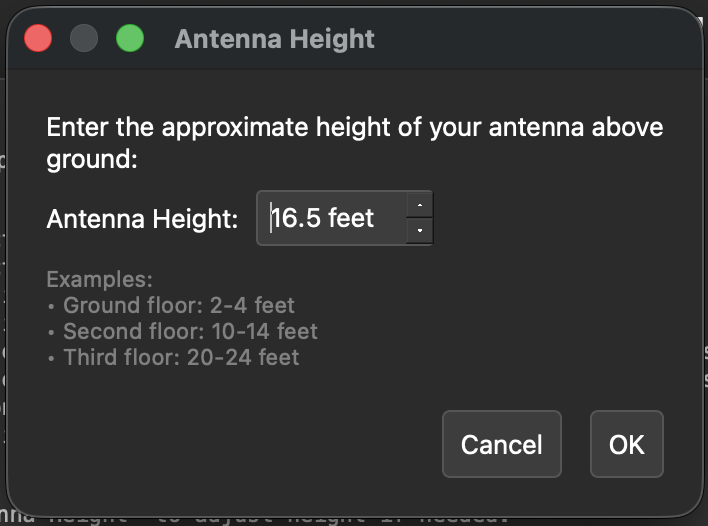
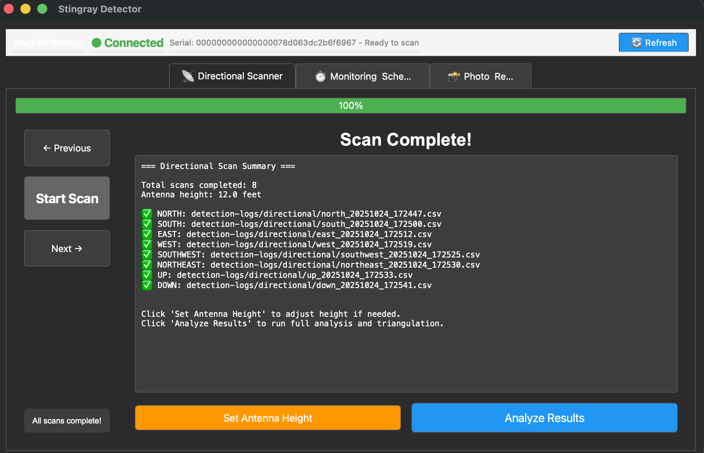
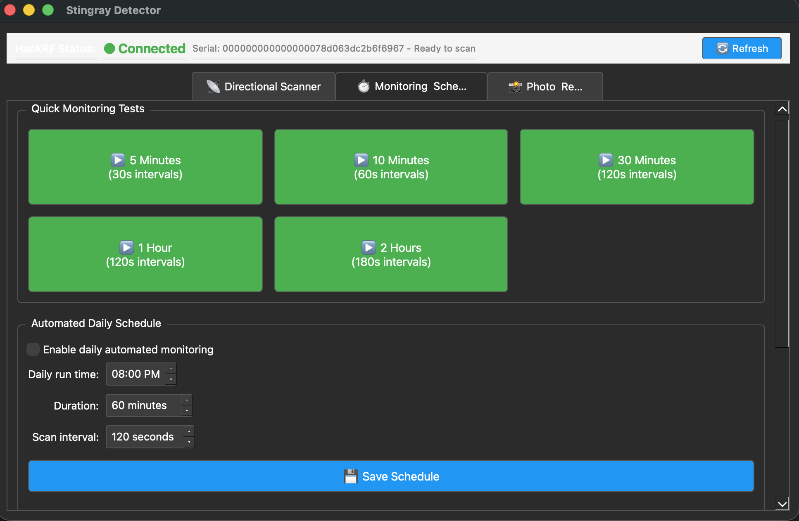
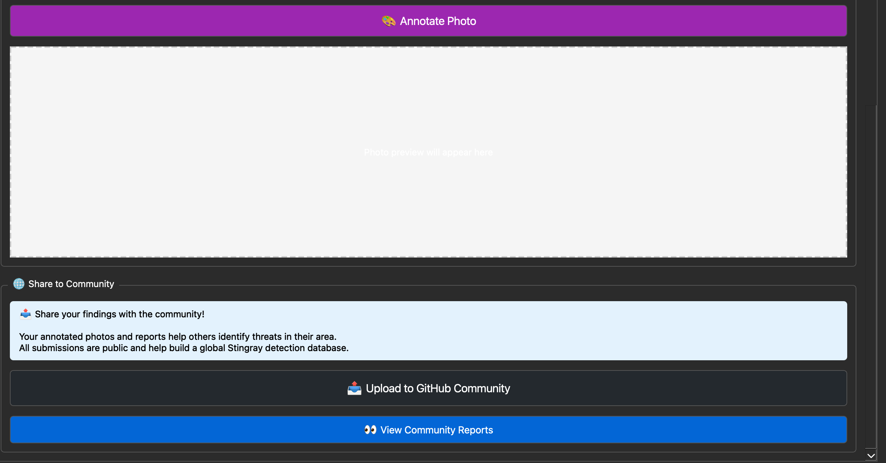
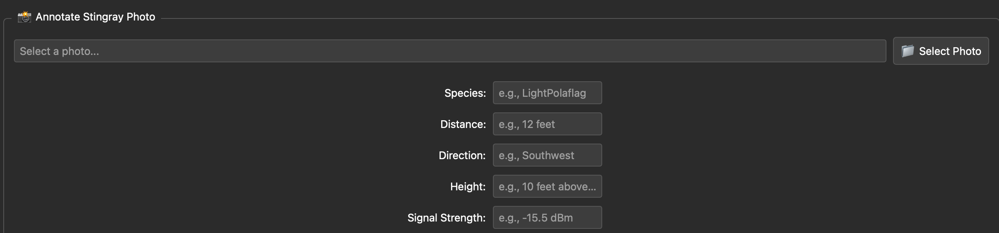

5.6 Using the Stingray Detector GUI
🖥️ Graphical Interface
The Stingray Detector includes a user-friendly GUI that guides you through the detection process step-by-step.
Launch command: python3 stingray_detector_gui.py
Setting Antenna Height

Set your antenna height for accurate triangulation
- 🟢 Green "Connected": HackRF detected and ready
- 🟡 Orange "Not Found": HackRF not detected - check USB connection
- 🔴 Red "Error": Permission or driver issue
- 🔄 Refresh button: Re-check HackRF status
Tab 1: Directional Scanner

Directional scan results showing signal strength by direction
How to Use:
- Point antenna in the direction shown on compass (North, South, East, West, etc.)
- Click "Start Scan" to capture RF data for that direction
- Wait for scan to complete (~10 seconds)
- Click "Next" to move to the next direction
- Repeat for all 8 directions plus UP and DOWN
- View results summary showing strongest signal direction
Tab 2: Monitoring & Schedule

Quick monitoring tests and automated scheduling
Quick Monitoring Tests:
- 5 Minutes: Quick check (30-second intervals)
- 10 Minutes: Short monitoring (60-second intervals)
- 30 Minutes: Standard monitoring (120-second intervals)
- 1 Hour: Extended monitoring
- 2 Hours: Long-term tracking
Click any button to start monitoring. Data is saved automatically to detection-logs/tracking/
Automated Daily Schedule:
- Enable checkbox to activate daily automated scans
- Set time for daily scan (e.g., 3:00 AM)
- Choose scan duration (5-120 minutes)
- System will run scans automatically at scheduled time
Tab 3: Photo & Report
Add Photo Evidence (Top Section):

Upload and manage photo evidence
- Click "Browse" to select photo from your device
- Photo preview appears in the interface
- Add to your detection report
- Photos stored in
detection-logs/photos/
Add Annotations (Middle Section):

Annotate photos with arrows, circles, and text
- Arrow: Point to suspicious device or location
- Circle: Highlight area of interest
- Text: Add labels and descriptions
- Color picker: Choose annotation color
- Save: Export annotated photo
Share to Community (Bottom Section):
📤 Upload to GitHub Community
Share your detection report with the global community:
- Complete your scans and add photos/annotations
- Click "Upload to GitHub Community"
- Your report is added to the public database
- Helps others identify threats in their area
📊 View Community Reports
Browse detections from around the world:
- See where others have detected IMSI catchers
- Compare signal patterns and frequencies
- Learn from community findings
- Contribute to global surveillance awareness
Tips for Best Results
- 📡 Hold antenna steady during each scan
- 🧭 Point directly in the indicated direction
- ⏱️ Wait for completion - don't interrupt scans
- 📍 Stay in same location for all directional scans
- 🔋 Check HackRF connection before starting
- 💾 Save data regularly - all scans auto-save to logs
- 📸 Document everything - photos are crucial evidence